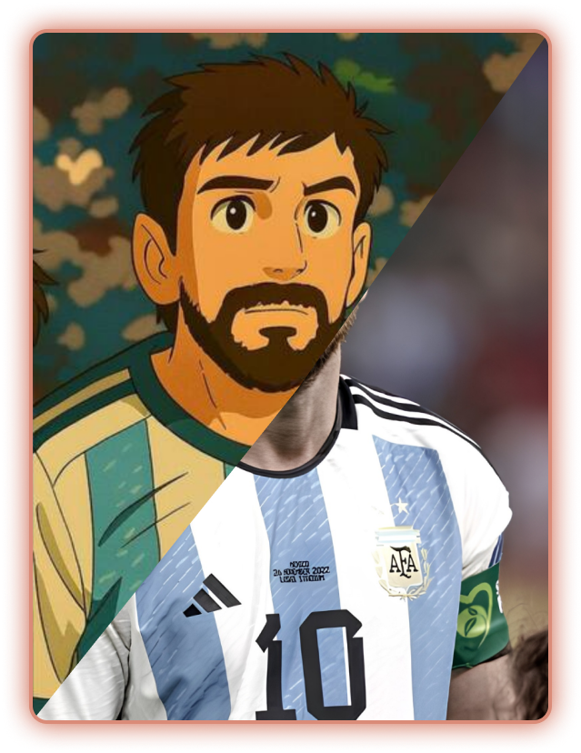

¿Qué tan masivo fue el efecto Ghibli?
En marzo de 2025, ChatGPT lanzó su generador de imágenes y explotó la moda de las fotos con el estilo de Studio Ghibli.
Convertí fotos al estilo Ghibli en 30segundos. Después, comparate con ChatGPT.
